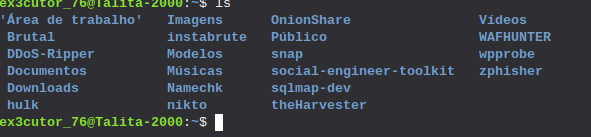
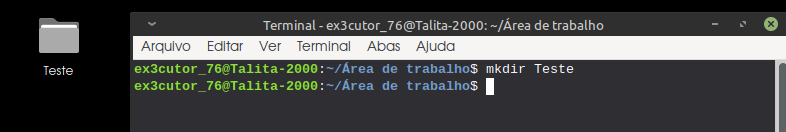
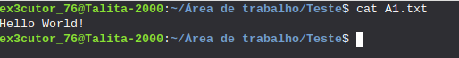
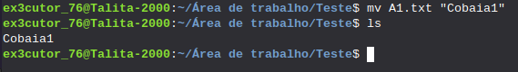
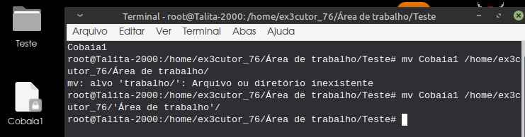
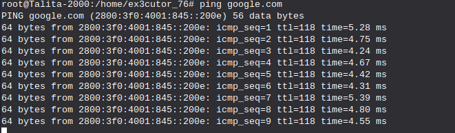

Comandos básicos do terminal:
Bem esse tópico é para aquelas pessoas que estão migrando para o Linux ou que tem uma curiosidade,
por aqui irei te passar alguns comandos básicos do Linux, então... Espero que aprendem rápido
porque são bem simples.
ls:
O comando ls ele meio que lista os arquivos, então... abaixo estará um exemplo:
 Aqui por exemplo usei o ls para listar os arquivos, mas se caso você
quiser ver todos os arquivos existentes no computador use o comando ls -a que irá listar uma variedade de arquivos.
cd:
O comando cd serve para entrar em um diretório, a imagem abaixo irá mostrar o exemplo:

Aqui por exemplo eu acabei de entrar no diretório Documentos.
E se caso você quiser sair do diretório é só usar o comando: cd ..
mkdir:
O comando mkdir serve para você criar um diretório, abaixo estará um exemplo:
 Aqui por exemplo acabei de criar um diretório chamado de "Teste" na área de trabalho do meu Linux.
cp:
O comando cp serve para copiar arquivos e diretórios, a imagem abaixo irá mostrar um exemplo:

Bem aqui eu tive que especificar colocando o "-dir" para eu dizer que quero
copiar um diretório e bem como pode ver eu coloquei o nome do diretório cópia como "Teste2" que logo é a cópia do "Teste"
rm:
O comando rm ele serve para remover arquivos e diretórios, abaixo estará um exemplo:

Aqui por exemplo utilizei o rm para remover o diretório cópia "Teste2"
Aviso: Nunca utilize o comando: rm -r -f (Isso porque você estaria matando o sistema operacional apagando
arquivos que fazem o sistema operacional funcionar.)
touch:
O comando touch ele serve para criar um arquivo vazio, abaixo estará um exemplo:

Aqui por exemplo acabei de criar um arquivo txt com o nome de "A1"
nano:
O comando nano serve para editar arquivos, abaixo está um exemplo:

Aqui por exemplo estou editando o arquivo A1.txt, e acabei escrevendo "Hello World!"
e para eu salvar eu só preciso dar ctrl + O para salvar e para sair só dar um ctrl + X.
cat:
Não, com esse comando você não cria um gato (Infelizmente), mas com esse comando você pode ver o conteúdo do arquivo, abaixo estará um exemplo:
 Aqui por exemplo ele me mostrou o que estava escrito no arquivo A1.txt que no caso a mensagem foi "Hello World!"
mv:
O comando mv serve para 2 coisas, renomear e mover arquivos, abaixo estará os dois exemplos:
Exemplo 1:
 Aqui por exemplo eu acabei de renomear o "A1.txt" para "Cobaia1"
Exemplo 2:
 Admito que aqui tive algumas complicações, já que não me acostumo a mover diretórios no terminal, mas seria basicamente isso: mv "Nome do arquivo" /home/seu_user/o diretório que você quer
find:
O comando find serve para você procurar arquivos, abaixo estará um exemplo:

Aqui neste exemplo eu acabei de procurar um repositório chamado de "Testes"
clear:
Como já diz o nome do comando ele meio que limpa, então se você usar ele, ele vai limpar o terminal deixanto tudo vazio.
history:
Este comando serve para mostrar seu histórico de comandos do terminal, e sim ele lista todos até você apagar, mas se caso queira limpar o histórico de comandos use: history -c
man:
O comando man é basicamente um manual dos comandos, então tipo é com esse comando que você irá entender os outros comandos, porque ele é tipo um manual, e se caso queira testar é assim que ele funciona: man "nome do comando"
ping:
O comando ping serve para verificar a conectividade com o host, terá uma imagem de exemplo abaixo:
 Aqui por exemplo eu quis verificar a conectividade com o host da google.
Aviso: se quiser que o comando pare, use ctrl + C
wget:
O comando wget serve para você fazer downloads de arquivos na internet, abaixo estará um exemplo:

Aqui por exemplo acabei de fazer um download do arquivo do Youtube, e ele salvou como um arquivo index.html que seria um tipo de script em HTML.
passwd:
Com esse comando você pode alterar a senha de usuário
sudo:
Com esse comando você pode ter acesso ao super usuário ou no caso o root. (No caso se quiser você pode usar o comando: "sudo su" para entrar como root no terminal.)
adduser:
Com esse comando você adiciona um usuário.
top:
O comando top também é a mesma coisa do "btop", só que ele é mais usado entre usuários linux devido a fácil compreensão das informações, abaixo estará um exemplo de como ela mostra isso.

df -h:
Com esse comando ele mostrará o uso de espaço em disco.